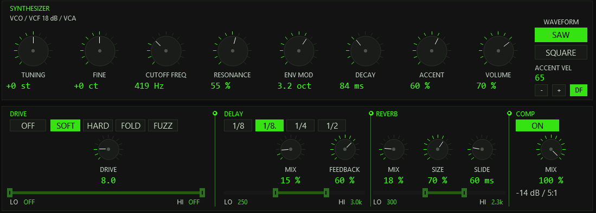
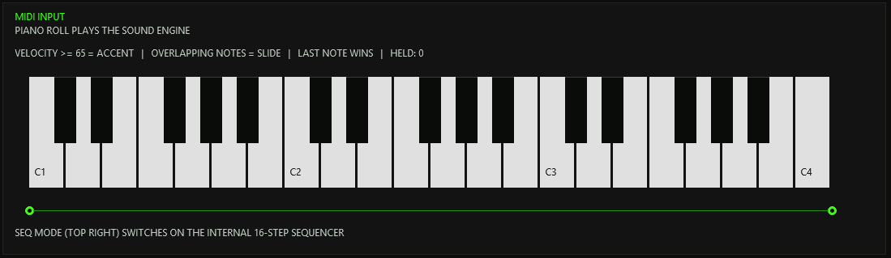
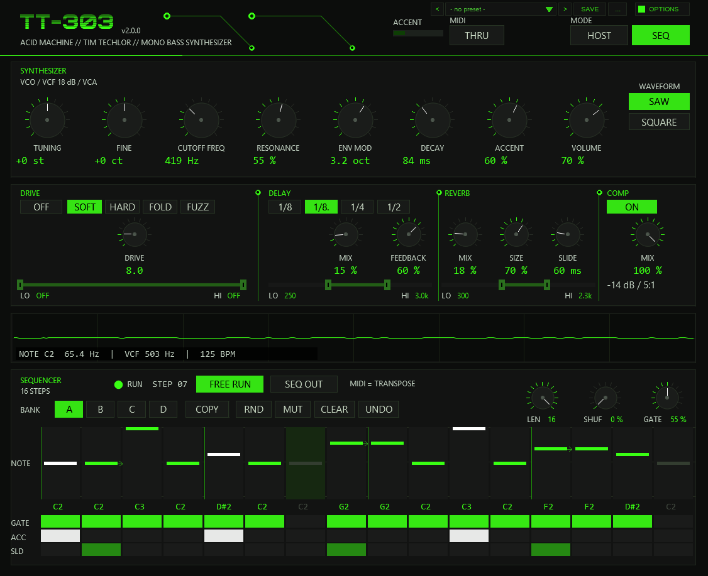
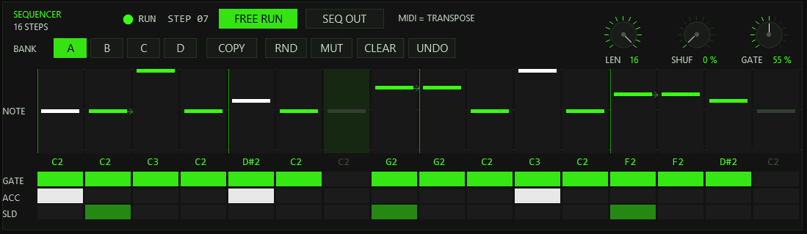
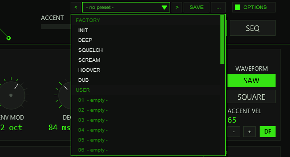
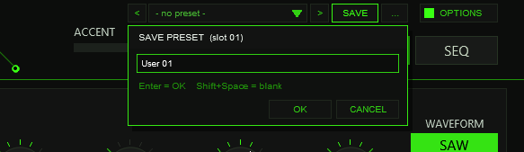
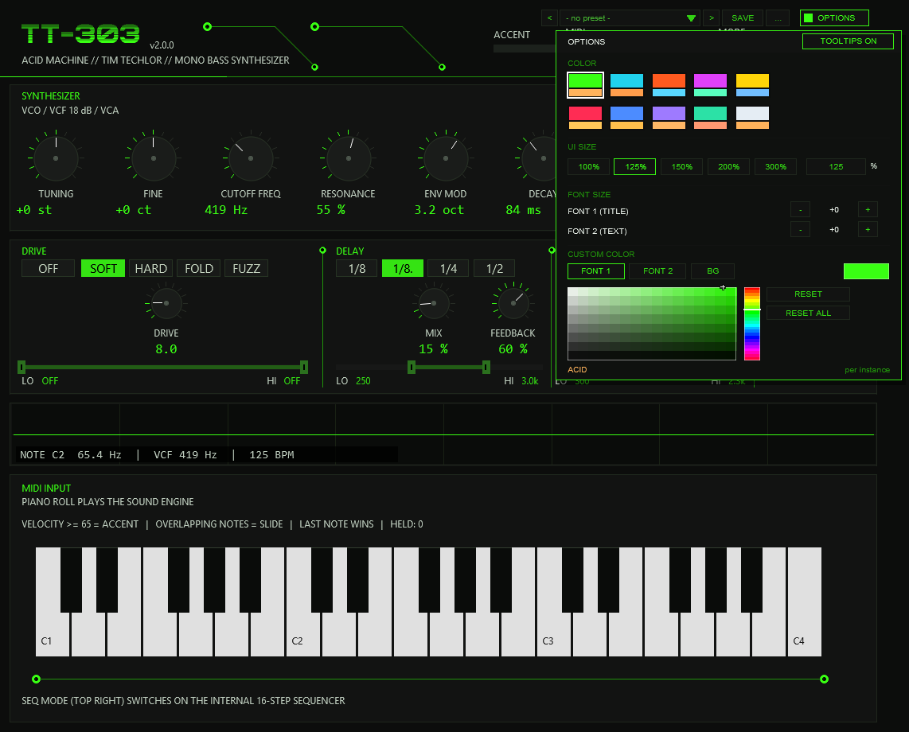

01The concept
The Roland TB-303 is a single-oscillator bass synthesizer whose filter, envelopes and sequencer were never meant to be a bass synthesizer — and became the sound of acid house. TT-303 is a tribute to it as a REAPER instrument: a model of the signal path, without samples and without a sample ROM. There is one voice (monophonic), one oscillator, one filter, and the two circuits that give the original its character: accent and slide.
note → oscillator (saw / square) → 18 dB ladder filter (VCF) → VCA
→ drive → ping-pong delay → reverb → compressor (dry only)
→ VOLUME → soft clip → stereo outThe plug-in has no audio input and two outputs (stereo). Its MIDI input is the only way to play it from the outside; in SEQ mode an internal 16-step sequencer with four banks A–D plays the notes itself. The whole front is drawn by the plug-in, uses the UI SIZE setting in OPTIONS, and every control can be automated.
02Installation
TT-303 ships through the TimTechlor ReaPack repository. In REAPER: Extensions → ReaPack → Import repositories…, add
https://raw.githubusercontent.com/timtechlor/reapack-TimTechlor/main/index.xmlthen Browse packages, pick TT-303 Acid Machine and apply. The effect is listed under
JS: TT-303 Acid Machine in the FX browser. Manual installation works too: the plug-in is one file,
TT-303_Acid_Machine.jsfx; copy it into Effects (or a sub-folder) in REAPER’s resource
path (Options → Show REAPER resource path in explorer) and add it from the FX browser.
There is nothing else to install: the plug-in needs no samples and no additional files. REAPER 6 or newer is assumed. The wordmark uses the font Zilap Orion if it is installed; otherwise a bold sans-serif is used. The front measures which fonts exist and falls back by itself.
After an update REAPER may keep showing the old name or version in the FX window title — see Troubleshooting. The real version is always written in the header of the front (the small version badge next to the wordmark).
03Quick start
- Create a track and add
JS: TT-303 Acid Machine(it is an instrument: it needs no audio input, only MIDI). A new instance starts in HOST mode with the INIT sound. - Give the track MIDI: record-arm it and play a keyboard, or put a MIDI item on it. Play a low note (C2 is the original pitch of the sequencer, the keys around C1–C3 are the bass register). Overlapping notes slide, a note with velocity ≥ 65 is an accent (the threshold is adjustable).
- Shape the sound with CUTOFF FREQ, RESONANCE, ENV MOD and DECAY (the four knobs that make the acid sound) and ACCENT. Pick a starting point from the preset bar in the header (INIT, DEEP, SQUELCH, SCREAM, HOOVER, DUB).
- Want a pattern without MIDI? Switch the MODE (top right) to SEQ and press play: the 16-step sequencer below the effects panel plays the start pattern of bank A on the project timeline. FREE RUN lets it run while the transport is stopped.
- Add character in the effects panel: DRIVE on with FOLD or FUZZ, the dotted-eighth DELAY (the INIT default), some REVERB; COMP adds punch to the dry signal.
04The front & how to operate it
The front is drawn in a fixed grid (900 × 732 units) and redrawn at the UI SIZE chosen in OPTIONS (125% by default; HiDPI is honoured). Resize the FX window to show more of the front. All built-in REAPER sliders are hidden; you operate the drawn front only. The areas, top to bottom:
| Area | Contents |
|---|---|
| Header | Wordmark and version, ACCENT indicator (charge of the accent capacitor), MIDI THRU, the MODE switch HOST / SEQ, the preset bar (< name > SAVE ...) and OPTIONS |
| SYNTHESIZER | Knobs TUNING, FINE, CUTOFF FREQ, RESONANCE, ENV MOD, DECAY, ACCENT, VOLUME; WAVEFORM SAW / SQUARE; ACCENT VEL (only in HOST mode) |
| Effects panel | Four columns: DRIVE (on/off, model, amount, input EQ), DELAY (division, mix, feedback, EQ), REVERB (mix, size, EQ and the SLIDE time knob), COMP (on/off, mix) |
| Oscilloscope | The output signal, with a read-out NOTE C2 65.4 Hz | VCF 419 Hz | 125 BPM: current note and pitch, the current filter cutoff (moves with the envelope) and the tempo in use |
| Bottom panel | HOST: a keyboard that lights the notes being held. SEQ: the sequencer (section 12) |

Knobs
Drag a knob vertically (up = more). Hold Shift while dragging for fine adjustment (about five times finer); the mouse wheel over a knob moves knobs with whole-number values (TUNING, FINE, FEEDBACK, SIZE, COMP MIX, LEN, SHUF, GATE) by exactly one step per notch and all others by 2 % of their range (SLIDE: 6 ms); right-click or double-click resets it to its default value. Values land on the step of the parameter (0.1 for CUTOFF FREQ to VOLUME and DRIVE, 0.5 for the delay and reverb MIX, whole numbers for the rest). A knob you do not touch never writes its parameter, so an automation envelope on it is left alone.
Tooltips
Every control of the front has a tooltip: rest the pointer on a knob, button, EQ handle, sequencer step row or preset-bar button for about a third of a second and a one-line explanation appears next to it (not while you drag). OPTIONS > TOOLTIPS ON / OFF switches them off for this instance; the setting is saved with the project.
Buttons and the EQ strips
Buttons switch on click (mode, waveform, drive model, delay division, FREE RUN and so on). The three EQ strips under DRIVE, DELAY and REVERB carry two handles: the left one is the low cut (LO), the right one the high cut (HI), on a logarithmic scale from 20 Hz to 20 kHz. Drag a handle horizontally (Shift = five times finer, mouse wheel = steps), right-click restores the factory value. At the outer edge a handle snaps to OFF (low cut 0, high cut 20 kHz = true bypass of that filter). The low cut cannot cross the high cut.
05Operating modes: HOST and SEQ
The MODE switch in the header selects who plays the voice. Switching modes releases all notes cleanly.
HOST
The plug-in is a pure sound generator, played from the piano roll, a keyboard or another plug-in’s MIDI output. Rules, as printed on the front:
- Velocity ≥ ACCENT VEL = accent. The threshold is set with the
-/+buttons under ACCENT VEL (1–127, default 65, as on the Devil Fish). TheDFbutton next to them steps through the four thresholds of the Devil Fish documentation, 65, 80, 100 and 120 (“Accent Velocity Threshold, Parameter 6: Threshold equal to or above which Note On Velocity will activate Accent”); it lights when the value is one of these four. It is only shown and used in HOST mode. A project or user preset saved with an earlier version keeps its stored value (the default used to be 100); only new instances and the INIT command of the preset menu start at 65. - Overlapping notes = slide. A note that starts while the previous one is still held glides to the new pitch without retriggering the envelopes (legato).
- The same note again while it sounds = ignored. The voice behaves like the MIDI input of the Devil Fish modification (Robin Whittle, Real World Interfaces: “A second Note On event for a note which is already On is ignored”). If a note of the same pitch starts while that key is still held (overlapping notes of one key in the piano roll), the second note-on does nothing: no new attack, no accent, no glide. The first note-off of that key ends the note; a further note-off of the same key is ignored. So the first of two overlapping equal notes sets the length, and the second one is lost. To hear the pitch twice, let the first note end before the second one starts (a gap of a few milliseconds is enough). A source that sends a note-on twice but only one note-off therefore cannot leave a note hanging.
- Last note wins. The voice is monophonic. Notes that are still held are remembered in a stack ten notes deep, as on the Devil Fish (“a ten-deep internal stack of the most recently turned on notes”): when you release the newest one, the voice glides back to the one before. If an eleventh key is pressed while ten are held, the oldest one falls out of the stack: after you release the other keys it no longer holds the note, even if it is still held (up to v1.4.1 the stack held 32 notes).
- Sustain (CC 64) keeps the gate on. As on the Devil Fish (“Controller 64 (Sustain or Hold) can be used to independently turn on the Synthesizer Gate”; “Values 0 to 63 turn Off the internal flag which can turn the Gate On. Values 64 to 127 turn the flag On”), the gate is on as long as a key is held or CC 64 is at 64 or above. When you release the last key while CC 64 is on, the note keeps sounding at the last pitch with no release; it ends when CC 64 drops below 64 (or on All Notes Off, CC 123 / 120, which also clears the sustain flag). A key pressed while only the sustain holds the gate changes the pitch without a new attack and without a glide (the gate does not go off and on; there is no tied key to slide from); an accent fires as for a tied note. Pressing CC 64 while nothing sounds does not start a note, it only holds a note that sounds or is played afterwards. The stack itself is not touched by CC 64: a released key leaves it at once, so releasing CC 64 with keys still held changes nothing. The line above the keyboard shows
SUSTAIN (CC 64)while the flag is on. Sustain works in HOST mode only. - The keyboard at the bottom (C1 to C4) lights the held notes;
HELD: ncounts them (at most 10).

= n = ACCENT, OVERLAPPING NOTES = SLIDE, LAST NOTE WINS, and a keyboard from C1 to C4" width="1094" height="317">SEQ
The internal 16-step sequencer takes over and plays the pattern of the active bank (A–D). MIDI notes no longer play the voice: they transpose the pattern (section 12). The bottom panel turns into the sequencer.

06Oscillator & filter
| Control | Range | What it does |
|---|---|---|
WAVEFORM | SAW / SQUARE | Sawtooth, or the 303 square: a narrow, asymmetric pulse (duty about one fifth, slightly narrower towards high notes) with a high-pass tilt, rich in even harmonics. Both are band-limited (1-sample PolyBLEP). |
TUNING | −24 … +24 st | Coarse pitch. Takes effect with the next note. |
FINE | −50 … +50 ct | Fine pitch, for detuning against other instruments. |
CUTOFF FREQ | 0 … 100 | Base cutoff of the filter, exponential, about 145 Hz at 0 up to about 1 kHz at 100. Resonance lifts the corner additionally (factor 1 + resonance, so up to about 2 kHz at both knobs full). The Hz read-out under the knob is this base cutoff, before the envelope. |
RESONANCE | 0 … 100 % | Feedback of the ladder. Even at 0 % the filter has a slight peak (Q about 1.6); towards 100 % it becomes the nasal, whistling peak. The feedback is level-dependent, so a loud signal damps its own peak, as on the original. A small fixed level trim keeps the loudness similar across the knob. |
ENV MOD | 0 … 100 | How far each note opens the filter: up to 5.2 octaves (the read-out shows octaves). The essence of the acid sound: every note flings the cutoff up, then it falls shut. |
DECAY | 0 … 100 | Decay of the filter envelope, exponential from about 30 ms to about 570 ms (the read-out shows the time constant in ms). Short values give tight blips, long ones let the filter stay open. Accented notes ignore this knob — their filter decay is a fixed 0.2 s (next section). |
VOLUME | 0 … 100 % | Output level, after all effects (section 11). |
The filter is a three-pole ladder, 18 dB per octave (like the original), built in zero-delay-feedback form, run at twice the sample rate and decimated with a 1/4-1/2-1/4 filter. A 20 Hz high-pass sits in the feedback path as a DC block, so the resonance stays alive even at a low cutoff. The amplitude envelope (VCA) is an attack of about 3 ms (1.8 ms on accented notes) followed by a slow sag with a fixed time constant of about 1.1 s, independent of the DECAY knob, and a release of about 12 ms when the note ends. The filter cutoff is limited to 30 Hz at the bottom and to 16 kHz (or 0.45 of the working rate) at the top.
07Accent & slide
Accent
An accented note is louder, has a sharper attack and opens the filter further — and the effect depends on the knobs, as on the hardware:
- ACCENT (0–100 %) scales both the level boost and the extra filter sweep of accented notes.
- The sweep is coupled to resonance: the more resonance, the stronger the accent sweeps the cutoff (and a little to the cutoff setting).
- Accented notes use a fixed filter decay of 0.2 s and an extra sweep that dies away in about 85 ms; the VCA attack shortens to 1.8 ms.
- The accent capacitor models the recharge of the original: accents in quick succession build up (the charge is capped) and are stronger than a single accent after a rest. The ACCENT bar in the header shows the charge and flashes on every accent.
In HOST mode an accent is a velocity at or above ACCENT VEL; in SEQ mode it is the ACC row of a step.
Slide
A slide ties two notes: the pitch glides from the old to the new note and the envelopes are not retriggered, so the filter and amplitude carry on. The glide is an RC-style approach in logarithmic frequency: constant time for any interval (a fifth takes as long as an octave), fast at first, then settling. The SLIDE knob (0–300 ms, default 60) is the time constant: about 63 % of the way after one time constant, about 95 % after three. At 0 the pitch jumps. (The knob sits in the REVERB column of the effects panel, to the right of SIZE.)
An accented note that is tied by a slide still fires its accent sweep, but the amplitude envelope is left alone — that is how accents and slides combine on the hardware.
In HOST mode a slide is an overlapping note of a different pitch (the same pitch overlapping is ignored, as on the Devil Fish, see section 05), in SEQ mode the SLD flag of a step ties it to the following step.
If the following step has the same note, the note is simply held on (a tie): no new attack, and SEQ OUT keeps one held note instead of sending a second note-on.
08Drive
A distortion stage between the voice and the delay. ON/OFF switches it (off = the stage is bit-exact transparent). Four models:
| Model | Character |
|---|---|
SOFT | Smooth tanh saturation. |
HARD | Hard clipping: the signal is driven into a limit at about ±0.82 with rounded corners. |
FOLD | Wave folding (a triangle fold): new harmonics that change with the level. |
FUZZ | Asymmetric fuzz: the positive and the negative half-waves are bent with different curves. |
DRIVE (1 … 40) is the gain in front of the shaper; the output level is compensated with the amount and, per model, so that changing the model does not change the loudness
much. The shaper runs at twice the sample rate to keep aliasing down.
The EQ strip selects what gets distorted. It is not in series: the band between LO and HI goes into the shaper, what the EQ removes runs past it undistorted and is added back afterwards. Raise the low cut and the bass is taken out of the distortion, not out of the output: the fundamental stays clean, only the mids get dirty. The factory setting is OFF / OFF (the whole signal is distorted).
09Delay
A stereo ping-pong delay, synchronised to the project tempo.
1/8,1/8.(dotted eighth, the INIT default),1/4,1/2: the delay time as a note value at the current tempo.MIX0–100 %: the level of the echoes. Below 0.5 % the delay is bypassed completely.FEEDBACK0–90 %: the number of repeats. The feedback path is low-passed (about 2.4 kHz), so each repeat gets darker. The echoes bounce between left and right.- EQ strip: filters what goes into the delay (factory 250 Hz … 3.0 kHz). The dry signal is unaffected.
The echoes also feed the reverb, so they get a tail of their own. The tempo is read from REAPER; below 10 BPM (or if none is reported) 120 BPM is used. The delay buffer holds 3.3 s, which is only reached with the 1/2 setting below about 37 BPM.
10Reverb
A Freeverb-type room: eight comb filters and four all-pass filters per channel with a short pre-delay (about 12 ms), lengths scaled with the sample rate.
MIX0–100 %: level of the tail. Below 0.5 % the reverb is bypassed, and its buffers are cleared once on the way down (no old tail comes back when you turn it up again).SIZE20–100 %: room size. Small rooms give a short, tight tail, large ones a longer tail.- EQ strip: filters what goes into the reverb (factory 300 Hz … 2.3 kHz). The tail itself is additionally band-limited (a 250 Hz high-pass and a 3.2 kHz low-pass), which keeps it out of the bass and off the top.
11Compressor & master
The COMP column holds a compressor that acts on the dry signal only — delay and reverb are added afterwards, so the punch of the 303 stays in front of the room. Fixed values: threshold −14 dB, ratio 5:1, soft knee (30 dB wide), attack 3 ms, release 250 ms, plus a make-up gain of about +5 dB.
ON/OFF: default ON. Switching it off also removes the make-up, so the dry signal is about 5 dB quieter (compensate with VOLUME). The detector keeps running, so switching is click-free.MIX0–100 %: a linear blend between the uncompressed (0 %) and the compressed signal (100 %) — parallel compression. At 100 % it is identical to the plain compressor.
Master. Dry, delay and reverb are summed and scaled by VOLUME; then a soft clipper takes over: linear up to 0.7, a tanh knee above it, with a limit of exactly 1.0, so a resonance overshoot rounds off instead of clipping square. A hard limit at ±1 follows.
12The sequencer
In SEQ mode the plug-in plays a pattern of up to 16 steps. One step is a sixteenth note at the project tempo. Each step has a note, a gate (sounds or rests), an accent flag and a slide flag.

Editing steps
- Note lane: click or drag in a column to set the note of that step (two octaves, C1 to C3); the name of the note (for example
D#2) is printed under the lane. Right-click a column to switch the step’s gate on or off. - GATE / ACC / SLD rows: click a cell to toggle it; drag across a row to paint the same state onto several steps — the quickest way to lay out a run of accents or slides. GATE off = rest, ACC (white) = accent, SLD = the step is tied to the next one (slide).
- The column of the step that is playing is highlighted. Steps beyond
LENare dimmed and do not play.
Playback controls
| Control | Function |
|---|---|
LEN (1–16) | Pattern length. Shorter patterns loop their first steps — useful for odd meters. The pattern is locked to the project timeline, so a 12-step pattern restarts every 12 sixteenths counted from the project start. |
SHUF (0–75 %) | Shuffle: delays every second sixteenth (steps 2, 4, 6…) by up to 37.5 % of a step. 0 = straight. |
GATE (10–100 %) | How long each normal step sounds, as a share of the step. Steps that carry a slide flag are held until the next step starts. |
BANK A B C D | Four pattern memories. Switching during playback changes the pattern with the next step. A new instance holds the start pattern in A, B and C and the pattern PUMP in D (an E2 bass with slides and accents). |
FREE RUN | Runs the sequencer with the transport stopped: it starts at step 1 and follows the project tempo. When the transport runs, the sequencer follows the timeline again. |
SEQ OUT | Also sends the generated notes to the plug-in’s MIDI output (channel 1, velocity 127 for accents, otherwise 100) — to play an external synth or another plug-in with the same line. See the MIDI section for the difference from MIDI THRU. |
RUN / STOP | A lamp and the current step number. |
Pattern tools
- COPY: click COPY (it lights and
SELECT TARGET BANKappears), then click a bank letter: the active bank is copied into it. The active bank does not change. - RND: a random pattern in the active bank. Notes come from a minor pentatonic over C2 with now and then an octave down; about 78 % of the steps sound, 22 % are accented, 16 % slide. Step 1 always sounds, accented.
- MUT: a mutation: three random steps are changed (a new note, or gate, accent or slide flipped), the rest stays recognisable.
- CLEAR: all steps become rests on C2.
- UNDO: takes back the last RND, MUT or CLEAR (one level). It belongs to the bank it was made in: the button lights, and works, only while that bank is shown; switch back to it to use UNDO. Copying another bank onto it with COPY discards the UNDO. It does not cover manual step edits.
All four banks, the length, shuffle and gate settings are saved with the project. RND, MUT, CLEAR and UNDO work on the active bank only. Every pattern change (step edits, COPY, RND, MUT, CLEAR, UNDO, loading a user preset or INIT) also creates an entry in REAPER’s undo history (Ctrl+Z, Edit FX) once the mouse button is released, and marks the project as changed.
Transport and MIDI transpose
The sequencer runs while the project plays (and, with FREE RUN, also while it is stopped). On start it picks up the step under the cursor; a loop jump, a position change or a tempo
change re-syncs it, but the ordinary running does not, so the timing stays steady; a small re-sync (for example after a tempo change) never plays a step twice.
Pressing play does not cut a note that is sounding (FREE RUN, a held key) or a delay or reverb tail, and keeps UNDO, COPY and a held transpose key; if the plug-in is silent at that moment it starts from its clean
initial state, exactly as before. Incoming MIDI notes transpose the pattern: C2 (MIDI note 36) is the original pitch, every semitone
above or below shifts the pattern accordingly while the key is held; MIDI TRANSPOSE +n shows the shift. When the key is released the pattern returns to its original pitch.
13MIDI
Notes
In HOST mode incoming notes play the voice (velocity ≥ ACCENT VEL = accent, overlapping = slide, last note wins from a stack of ten). In SEQ mode they transpose the pattern. The plug-in listens on all MIDI channels.
Notes are consumed by the instrument: unless MIDI THRU is on they do not appear at the output.
Controllers
| CC | Controls | Notes |
|---|---|---|
74 | CUTOFF FREQ | 0–127 is scaled to the full 0–100 range of the knob; the knob on the front follows. Any MIDI channel. |
71 | RESONANCE | |
73 | ENV MOD | |
75 | DECAY | |
16 | ACCENT | |
7 | VOLUME | |
64 | Sustain (HOST mode) | 64–127 holds the gate on after the last key is released, 0–63 lets it go (Devil Fish behaviour, see section 05). Ignored in SEQ mode. The controller still passes through to the output. |
123, 120 | All notes off | Releases the voice and clears held notes, the sustain flag and the MIDI transpose. |
Pitch bend, clock and all other controllers are not used by the voice; they are passed to the output.
THRU and SEQ OUT — two different sources
- MIDI THRU (header) forwards the incoming notes to the output. CC, pitch bend and clock always pass through.
- SEQ OUT (sequencer panel) sends the self-generated sequence to the output.
In SEQ mode incoming notes are transpose commands — whoever also passes them on with THRU sends them out next to the sequence. MIDI events carry their sample offset: notes start sample-accurately, and the sequence leaves the plug-in with the same accuracy.
The pattern mirror (gmem)
The plug-in mirrors the displayed bank into shared memory named tt303_acid. A ReaScript can read it and turn the pattern into a MIDI item;
the script tt303_pattern_to_midi.lua does exactly that (accent = velocity 127, otherwise 100; slides tie legato into the next step). It is a separate file that is not part of the plug-in package. With several instances in a project, the last one processed wins.
14Preset bar & user bank
The preset bar sits in the header, directly left of OPTIONS: < name > SAVE .... It replaces the six patch buttons of earlier versions.

- empty -). The mouse wheel scrolls, a click loads.| Control | Function |
|---|---|
< / > | Previous / next preset: first the six factory presets, then the used user slots; wraps around and loads immediately. |
| Name field | Opens the list with FACTORY and USER. A * behind the name means that a sound or pattern setting differs from the loaded preset. |
SAVE | Saves the current state into the selected user slot; with a factory preset (or none) selected, into the first free slot. A name box opens (up to 24 characters, default User 07): type, Enter or OK saves, CANCEL or a click outside cancels. |
... | RENAME, COPY (into the next free slot, named Copy of …) and DELETE (a second click confirms) — for the selected user preset — and INIT: all preset parameters to their default values and the start pattern in banks A–D. |

The factory presets
The six FACTORY entries are the former patch buttons. A factory preset sets the sound controls listed below and leaves everything else (tuning, fine, volume, accent velocity, slide time, the delay division, the EQs, the compressor, the pattern and its banks) alone — except INIT, which also restores slide time 60 ms, dotted-eighth delay, room size 70 %, the three EQ strips, compressor ON / 100 %.
| Preset | Wave | Cutoff | Reso | Env | Decay | Accent | Drive | Delay mix / fb | Reverb |
|---|---|---|---|---|---|---|---|---|---|
| INIT | SAW | 32 | 55 | 62 | 35 | 60 | off, SOFT 8 | 15 / 60 | 18 |
| DEEP | SAW | 14 | 40 | 40 | 64 | 35 | off, SOFT 7 | 14 / 50 | 16 |
| SQUELCH | SAW | 52 | 80 | 82 | 22 | 80 | on, SOFT 8 | 16 / 62 | 12 |
| SCREAM | SQUARE | 72 | 88 | 92 | 15 | 95 | on, HARD 16 | 10 / 55 | 9 |
| HOOVER | SQUARE | 74 | 68 | 96 | 55 | 70 | on, FOLD 11 | 20 / 62 | 24 |
| DUB | SAW | 18 | 52 | 44 | 82 | 50 | off, SOFT 7 | 46 / 80 | 44 |
All values are knob positions (0–100), except drive (1–40) and feedback (%). They are starting points: every control stays editable.
What a user preset contains
All sound controls (waveform, tuning, fine, cutoff, resonance, env mod, decay, accent, volume, slide time, accent velocity, drive on / model / amount, delay mix / division / feedback, reverb mix / room size, the three input EQs, compressor on / mix), the pattern settings (length, shuffle, gate, active bank) and the four pattern banks A–D with all steps. The pattern is always part of a user preset (for an acid machine the pattern is part of the sound), so loading one replaces the pattern too. Not part of a preset: the operating mode (HOST / SEQ), FREE RUN, SEQ OUT, MIDI THRU, the colour scheme (OPTIONS) and the transport.
Where the user bank lives
A plug-in cannot write files, so the 32 user slots are part of the plug-in state: they are saved with the project, with FX-chain and track-template copies, and in every REAPER preset of this plug-in (the + button in the FX window toolbar).
To take your bank to another project or computer, save a REAPER preset once (+ → Save preset) and load it there: the whole bank comes with it. Projects saved with earlier versions (v1.0, v1.1) load unchanged with an empty bank.
15Options / Color
The OPTIONS button is at the right end of the header (up to v1.1 it sat between THRU and MODE; since v1.2 the preset bar is on its left). Click it, then a swatch. A click outside the box closes it.

per instance.COLOR offers ten schemes: ACID, CYAN, ORANGE, MAGENTA, YELLOW, RED, BLUE, VIOLET, MINT and ICE. A scheme changes the accent colour (knob rings, active buttons, step bars, LEDs, traces), the dimmed accent and, for RED to ICE, the slightly tinted panel background of the whole front at once.
The choice applies per plug-in instance and is saved with the project and with FX-chain copies. The factory colour is ACID, the classic acid green (#39FF14). Loading a preset (factory or user), RND, MUT or UNDO does not change the colour.
It is stored in the hidden parameter 36 (UI Color, 0–9); the sound is not affected.
Tooltips. The title row of the box carries a TOOLTIPS ON / OFF switch. ON (the default) shows the tooltip of the control under the pointer after a short dwell; OFF hides all of them. The setting applies per instance, is saved with the project, the FX chain and REAPER presets, and is not part of the factory or user presets.
Style: font size and custom colours. Below the swatches the box carries the style controls: FONT SIZE scales the two font slots in steps of about 8 % (range -4–+8) — FONT 1 is the large title font, FONT 2 is all other text; the current step is shown between the - and + buttons. The colour picker assigns a custom colour to FONT 1, FONT 2 or the background BG: pick the target, then drag in the hue strip and the saturation/value field — every change applies live while you drag, and BG derives the panel, border and knob colours from the spacing of the active scheme. RESET restores the scheme value of the selected target, RESET ALL restores everything. If a custom text colour drops below a contrast of 3:1 against the background, the box shows a small warning. All style settings apply per instance, are stored with the project, the FX chain and REAPER presets — and are not part of the factory or user presets of the preset bar.
16Automation & parameters
All sliders are hidden in the plug-in window, but every one is a normal REAPER parameter: use the Param menu of the FX window (or the automation list of the track) to put any of them on an envelope or to map it to a controller. The values are saved with the project. Names as REAPER shows them:
| # | Name | Range | Default |
|---|---|---|---|
| 1 | Mode | HOST / SEQ | HOST |
| 2 | Waveform | Sawtooth / Square | Sawtooth |
| 3 | Tuning (semitones) | −24 … 24 | 0 |
| 4 | Fine (cents) | −50 … 50 | 0 |
| 5 | Cutoff Freq | 0 … 100 | 32 |
| 6 | Resonance | 0 … 100 | 55 |
| 7 | Env Mod | 0 … 100 | 62 |
| 8 | Decay | 0 … 100 | 35 |
| 9 | Accent | 0 … 100 | 60 |
| 10 | Volume | 0 … 100 | 70 |
| 11 | Slide time (ms) | 0 … 300 | 60 |
| 12 | Accent from velocity | 1 … 127 | 65 (up to v1.4.1: 100) |
| 13 | Distortion | Off / On | Off |
| 14 | Distortion model | Soft / Hard / Fold / Fuzz | Soft |
| 15 | Drive | 1 … 40 | 8 |
| 16 | Delay mix (%) | 0 … 100 | 15 |
| 17 | Delay division | 1/8 / Dotted 1/8 / 1/4 / 1/2 | Dotted 1/8 |
| 18 | Delay feedback (%) | 0 … 90 | 60 |
| 19 | Reverb mix (%) | 0 … 100 | 18 |
| 20 | Room size (%) | 20 … 100 | 70 |
| 21 | SEQ pattern length | 1 … 16 | 16 |
| 22 | SEQ Shuffle (%) | 0 … 75 | 0 |
| 23 | SEQ Gate (%) | 10 … 100 | 55 |
| 24 | SEQ Free Run | Off / On | Off |
| 25 | SEQ pattern bank | A / B / C / D | A |
| 26 | SEQ Out (sequence to output) | Off / On | Off |
| 27 / 28 | Drive EQ Lowcut / Highcut (Hz) | 0 … 20000 / 20 … 20000 | 0 / 20000 (off) |
| 29 / 30 | Delay EQ Lowcut / Highcut (Hz) | 0 … 20000 / 20 … 20000 | 250 / 3000 |
| 31 / 32 | Reverb EQ Lowcut / Highcut (Hz) | 0 … 20000 / 20 … 20000 | 300 / 2300 |
| 33 | MIDI Thru (incoming notes) | Off / On | Off |
| 34 | Compressor | Off / On | On |
| 35 | Compressor mix | 0 … 100 | 100 |
| 36 | UI Color | 0 … 9 | 0 (ACID) |
| 37–40 | Q IDX (test), Q CMD (test), Q A (ro), Q B (ro) | see below | 0 |
REAPER adds its own Bypass, Wet and Delta after these. Moving a knob on the front, a CC (section 13) or a preset load all move the same parameters.
Q CMD is a command (for example it saves the current state into a user slot, loads a factory preset or randomises the pattern).
Since v1.3.3 these commands only run while a test script has unlocked them; otherwise the plug-in ignores them and sets Q CMD back to 0. Slider 36 (UI Color) stores the colour scheme.17In practice
- The classic squelch: preset SQUELCH (saw, resonance 80, env mod 82, decay 22, accent 80), then play with CUTOFF FREQ while the pattern runs; set ACC on a few steps and SLD on two or three.
- A bass that sits in the mix: DEEP or DUB with drive off. The delay EQ high cut around 3 kHz and the reverb EQ low cut at 300 Hz (both INIT defaults) keep echoes and tail out of the low end.
- Dirt without losing the fundamental: DRIVE on, FOLD or FUZZ, and raise the drive EQ low cut (LO) to 150–300 Hz: the bass stays clean while the mids are distorted.
- Play it from MIDI, tie the notes: in HOST mode let notes overlap a little in the piano roll for slides, and use velocity 65+ (the default
ACCENT VEL; theDFbutton offers 65 / 80 / 100 / 120) for accents. Hold the sustain pedal (CC 64) to keep a note sounding after the key is released. - Pattern ideas: press RND until something sticks, then MUT for variations; COPY into the next bank before you go on; UNDO takes back the last RND / MUT / CLEAR.
- Songs from banks: put the parts in A–D and automate SEQ pattern bank (parameter 25).
- With TT-303PATGEN: the TimTechlor pattern generator writes acid patterns as MIDI; insert it before the TT-303, keep the TT-303 in HOST mode and use velocity for accents and overlaps for slides (see the TT-303PATGEN manual). TT-303PATGEN 0.5.7 and later send normal steps with NORM VEL 64 and accents with ACC VEL 127, and its THRESH defaults to 65, the default ACCENT VEL of the TT-303: on a new instance of both, accents land exactly on the accent steps. If you raise ACCENT VEL with
DF, set THRESH in TT-303PATGEN to the same value. - Play the sequence on another synth: SEQ mode,
SEQ OUTon, and route the track’s MIDI output; turn VOLUME down if the TT-303 itself should stay quiet. - Parallel compression: COMP at 40–60 % mix keeps the accents lively while adding body. With COMP off, raise VOLUME to make up the roughly 5 dB.
18Troubleshooting
- No sound. TT-303 makes sound only from MIDI: in HOST mode it needs notes on the track (record-arm or a MIDI item; the keyboard display lights when notes arrive), in SEQ mode it needs the project to play or
FREE RUNon. Check VOLUME and that the track is not muted. - The voice does not play my notes / the pattern plays transposed. In SEQ mode MIDI notes only transpose (C2 = original pitch). To play the voice from MIDI, switch to HOST.
- Notes come out twice.
MIDI THRUpasses incoming notes,SEQ OUTsends the sequence: with both on in SEQ mode you send both. Switch off what you do not need. - The sustain pedal does nothing. CC 64 only works in HOST mode and only holds a note that already sounds or is played while it is down; pressing it with nothing sounding starts no note. A value below 64 counts as released.
- A held note suddenly stops (more than ten keys). The note stack is ten deep as on the Devil Fish: the oldest of eleven held keys falls out and no longer holds the voice.
- No slide. In HOST mode the notes must actually overlap (the second starts before the first ends). In SEQ mode set
SLDon the first of the two steps; the flag ties a step to the following one. With SLIDE at 0 ms the pitch jumps. - No accent. HOST mode: the velocity must reach
ACCENT VEL(default 65). SEQ mode: setACCon the step. Also raise the ACCENT knob; at 0 % an accent has no effect. - The sound got quieter by about 5 dB. Compressor OFF also removes its make-up gain; turn COMP on or raise VOLUME.
- No echoes / no tail. Delay and reverb are bypassed below 0.5 % MIX. The delay EQ and reverb EQ are input filters: a high low cut or a low high cut can leave nothing to delay.
- Tempo feels wrong. The plug-in reads the project tempo; if REAPER reports none (under 10 BPM) 120 BPM is used. The delay and the sequencer both follow it.
- The FX window still shows the old name or version. REAPER caches the description of a JSFX (the
desc:line) inreaper-jsfx.iniin its resource folder, so after an update the window title can keep the old text. It is cosmetic: the version in the header of the front is the real one. To refresh it, close REAPER, deletereaper-jsfx.ini(REAPER creates it again and re-reads all JSFX at the next start) and start REAPER. - The first click in the plug-in window does nothing. A click that only gives the window the focus can be swallowed by REAPER; click again.
- The front is small. Choose a larger UI SIZE in OPTIONS; enlarge the FX window to show more of the front.
- A project from v1.0 or v1.1 shows an empty user bank. Expected: older projects have no bank; it starts empty and all sounds and patterns of the project load unchanged.
- Names cannot contain a space / Esc closes the window. See the box in the preset section: use Shift+Space and CANCEL.
19Release notes
v2.0.0 — 2026-10-05: ReaPack release
- First release in the ReaPack repository since v1.07. The code is the same as v1.5.0; the number jumps to 2.0.0 because ReaPack reads 1.07 as 1.7 and would not offer 1.5.0 as an update. Everything listed below since v1.07 is part of this release.
v1.5.0 — 2026-10-03: HOST mode, more of the Devil Fish MIDI input
- Sound change (HOST mode only): three more rules of the Devil Fish MIDI input (Robin Whittle, Real World Interfaces; MIDI In Manual V1.0.4 and MIDI In and Out Manual): (1) Note stack ten deep instead of 32: with more than ten keys held the oldest falls out. (2) Sustain on CC 64: the gate stays on while CC 64 is 64 or above, even after the last key is released; CC 64 below 64, CC 123 and CC 120 release it. (3) Accent threshold 65 as the new default (V1.0.4 raised the Devil Fish default from 64 to 65); the four thresholds of the documentation, 65 / 80 / 100 / 120, are one click apart on the new
DFbutton next to-/+. - What you will hear in existing projects: (a) Projects and user presets saved with v1.4.1 or earlier keep their stored
ACCENT VEL(the old default 100); nothing changes there. (b) New instances and the INIT command of the preset menu start at 65: notes with velocity 65 to 99 are now accents, where they used to be plain notes. (c) A piano roll that holds more than ten notes at once and then releases the newer ones no longer falls back to the oldest notes. (d) CC 64 messages in a project, which used to pass through unused, now hold notes: a sustain pedal lane in the MIDI item lets notes ring on until the pedal goes up. Not changed: note range, transposition and the MIDI channel (the plug-in still listens on all channels), pitch bend (still passed through), the sequencer. - Test aid: with the test unlock used by the test scripts (never otherwise) the plug-in logs the MIDI events it receives into its shared memory. It has no effect on the sound.
v1.4.1 — 2026-10-02: HOST mode as on the Devil Fish
- Sound change (HOST mode only): a second note-on of a key that is already sounding is ignored (it was struck again in v1.4.0 and tied in v1.3.3), exactly as the Devil Fish MIDI input handles it. The first note-off of that key ends the note, so no note can stay stuck when a source sends two note-ons and one note-off (v1.4.0 held it until the next note-off of that key). Slides between different pitches, the last-note rule, notes that do not overlap and the sequencer are unchanged. Projects that have overlapping notes of one pitch sound as in v1.3.3 at these spots, except that a second note-on no longer fires an accent or moves a lower held key to the top.
v1.4.0 — 2026-10-02: same note in HOST mode
- Sound change (HOST mode only): an overlapping note of the same pitch is struck again with a new attack and sounds until its own note-off. Up to v1.3.3 it was tied to the sounding note (no attack, v1.3.3) and the note-off of the first note already ended it. Projects whose MIDI has such overlaps sound different at exactly these spots; everything else (other notes, slides between different pitches, the sequencer, SEQ ties) is unchanged.
- Large FONT steps (OPTIONS): labels in tight places (header, knob names and values, effect titles, ACCENT VEL) only grow while they still fit; where a larger step would not fit, that label stays at the normal size, so nothing overlaps. The values under the effect knobs are centred correctly again at UI sizes other than 100 %.
v1.3.3 — 2026-10-02: fixes from the code review
- Sound change: a slide into a step with the same note ties again (no new attack), as described in this manual; since an internal v5 such a step had been retriggered. This touches the factory patterns (banks A–C steps 8 and 13, bank D steps 1 and 11) and every pattern of yours with the same note after an SLD step. In HOST mode a second note-on of the same held key ties as well.
SEQ OUTno longer sends two note-ons for such a tie. - UNDO restores the bank it was made in (it used to write into the bank that was shown at that moment).
- Pattern and bank edits create an entry in REAPER’s undo history and mark the project as changed.
- Pressing play no longer cuts a sounding note or a delay / reverb tail, no longer leaves a held
SEQ OUTnote hanging and keeps UNDO, COPY and a held transpose key. - A re-sync after a tempo change no longer plays the current step twice.
- Mouse wheel: one step per notch on whole-number knobs (LEN did not move before, SHUF jumped +2 / −1); dragged values land on the parameter step; untouched knobs no longer write over an automation envelope.
- The preset bar no longer covers the OPTIONS button in very small windows; tooltips of the preset bar and OPTIONS as in the other TimTechlor plug-ins; long button labels at large FONT 2 sizes switch to a smaller font.
- The hidden test commands (parameters 37–40) only run when a test script unlocks them.
v1.3.2 — 2026-10-01: tooltips
Every control of the front now has a tooltip (knobs, switches, bank and pattern buttons, sequencer rows, EQ handles, preset bar, OPTIONS). The OPTIONS box gains TOOLTIPS ON / OFF (per instance, saved with the project). DSP and audio unchanged.
v1.3 — 2026-10-01: style options
The OPTIONS box gains FONT SIZE for FONT 1 (titles) and FONT 2 (text) and a custom HSV colour picker for FONT 1 / FONT 2 / BG with RESET / RESET ALL, live preview and a low-contrast warning; dim text contrast raised for readability in all schemes. DSP unchanged.
v1.2 — 2026-09-30: preset bar
- New preset bar in the header (
< name > SAVE ...): six FACTORY presets and a 32-slot user bank; RENAME, COPY, DELETE, INIT. A user preset contains all sound settings and the four pattern banks. The bank is saved in the project, FX chains and REAPER presets. - The six patch buttons are gone (their sounds are the FACTORY list); OPTIONS moved to the top right of the header.
- New hidden test parameters 37–40 for the preset bank. The audio is unchanged against v1.1 (bit-identical render).
v1.1 — 2026-09-30: Options / Color
- New OPTIONS box with COLOR: ten colour schemes (ACID, CYAN, ORANGE, MAGENTA, YELLOW, RED, BLUE, VIOLET, MINT, ICE), stored per instance in the hidden parameter 36.
- No change to the sound: a render of v1.1 is bit-identical to v1.0.
v1.0 — 2026-09-07: first full release
- The sound engine was fitted to recordings of a TB-303 software reference: 3-pole 18 dB ladder with new cutoff and resonance curves, filter decay of 30–570 ms, a fixed VCA sag, an RC slide in log frequency, a narrower square duty, a level trim.
- Factory presets retuned for this engine; start pattern PUMP in bank D; INIT with the working defaults (delay and reverb EQs, compressor on).
- Compressor on/off with a MIX knob, in its own COMP column of the effects panel; version badge in the header; the CUTOFF and DECAY read-outs show the real values of the engine.
- Pattern mirror in shared memory for a companion ReaScript that exports the displayed bank as a MIDI item.
20Technical data & honest notes
| Item | Value |
|---|---|
| Type | JSFX instrument, monophonic, stereo out (TT-303 L / R), no audio input |
| Host | REAPER 6 or newer (Windows, macOS, Linux); developed and tested with REAPER 7 |
| Oscillator | Saw / square, 1-sample PolyBLEP, 2× oversampled |
| Filter | 3-pole ladder, 18 dB/oct, ZDF/TPT, level-dependent feedback, 2× oversampled, 1/4-1/2-1/4 decimation |
| Envelopes | VCF decay 30–570 ms (accent: 0.2 s fixed), VCA attack 3 ms / 1.8 ms, sag 1.1 s, release 12 ms |
| Drive | Soft / Hard / Fold / Fuzz, 2× oversampled, parallel input EQ |
| Delay | Ping-pong, 1/8, dotted 1/8, 1/4, 1/2 of the project tempo, feedback 0–90 %, buffer 3.3 s |
| Reverb | Freeverb type, 8 combs + 4 all-passes per channel, sample-rate scaled |
| Compressor | −14 dB, 5:1, knee 30 dB, 3 ms / 250 ms, about +5 dB make-up, dry only, MIX |
| Master | Soft clip (linear to 0.7, tanh knee, limit 1.0) and a hard limit at ±1 |
| Sequencer | 16 steps, 4 banks, step = 1/16 note, shuffle up to 37.5 %, note range C1–C3, sample-accurate notes |
| MIDI | All channels; CC 74, 71, 73, 75, 16, 7, 123, 120; queue of 512 events per block |
| Presets | 6 factory, 32 user slots in the plug-in state (project, FX chain, REAPER preset) |
| Latency | None reported (no plug-in delay compensation) |
| Window | Default 1120 × 912, scalable; drawing grid 900 × 732; HiDPI aware |
Honest notes
- TT-303 is a tribute model. The filter, envelope, slide and square-duty values were fitted to reference recordings of a TB-303 software emulation; the match is close for level, decay and the filter curves, not exact. In the filter, resonance peak and corner frequency sit somewhat higher than in the reference (a limit of the three-pole ladder structure); the cutoff range was set a little darker on purpose, by ear.
- The square wave has fewer strong high harmonics (from about the 6th) than the reference.
- The default slide time (60 ms as time constant) has not been confirmed against a reference; the reference glide was estimated at about 100 ms in total, so a setting of 30–40 ms comes closer.
- The user bank was verified through the project and FX-chain round trip. The REAPER preset file path relies on the same plug-in state, which the other plug-ins with this preset module were tested with, but it was not run separately for TT-303.
- Pitch bend is not applied to the voice.
UI Size & Saved Options
Updated in v1.3.4. New instances open at 125% UI size for clearer text. The controls and text are redrawn at the selected size; the colour scheme and background retain their appearance.
Open OPTIONS and choose UI SIZE: 100% / 125% / 150% / 200% / 300%, or click the percentage field and enter a whole number from 50 to 400. Enter or a click outside the field applies it; Escape cancels the edit. Values outside the range are limited to the nearest supported value.
If the enlarged front exceeds the host window, use the horizontal and vertical scrollbars to reach every control. The mouse wheel over a scrollbar moves that view. OPTIONS stays visible at the upper right. You can also enlarge the REAPER FX window to show more of the front.
All OPTIONS settings are saved per instance: UI size, colour scheme, title and text font sizes, custom title/text/background colours, colour-picker target, and TOOLTIPS ON / OFF. Closing and reopening the FX window keeps them; saving and reopening the project restores them. They also travel with FX chains and native REAPER FX presets. Save the project to keep changes between sessions.
The sound presets in the plugin's own preset bar retain the instance's appearance settings. Older projects and style blocks remain readable; projects that predate UI SIZE use the new 125% default.